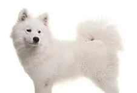
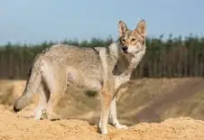

Ellos ya están listos para dar amor incondicional, ¿estás listo para recibirlo?

Descubre la alegría de abrir tu hogar a un nuevo amigo: en nuestra perrera online encontrarás peludos llenos de amor y esperando ser parte de tu familia. ¡Adopta, cambia una vida y deja que el amor incondicional entre a tu vida hoy mismo!
Sección de perros

- Nombre: Luna
- Raza: Husky Siberiano
- Edad: 4 años
- Peso: 22 kg
- Género: Hembra

- Nombre: Marco
- Raza: Pastor Alemán
- Edad: 7 años
- Peso: 55 kg
- Género: Macho

- Nombre: kiro
- Raza: Shiba Inu
- Edad: 5 años
- Peso: 45 kg
- Género: Macho

- Nombre: Nieve
- Raza: Samoyedo
- Edad: 5 años
- Peso: 28 kg
- Género: Hembra

- Nombre: Tofu
- Raza: Chow Chow
- Edad: 6 años
- Peso: 25 kg
- Género: Macho

- Nombre: Thor
- Raza: Tamaskan
- Edad: 2 años
- Peso: 30 kg
- Género: Macho